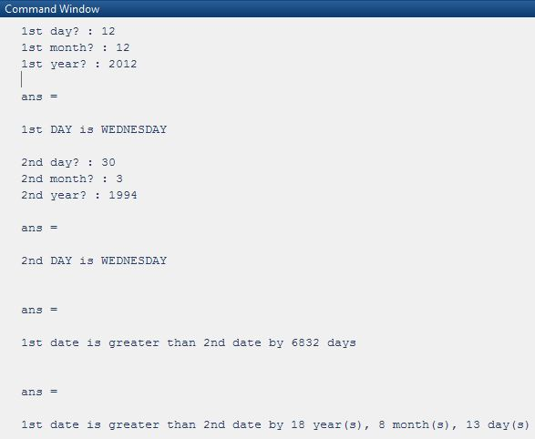

<h1 style="padding-left:4%;padding-top: 2%;padding-bottom: 2%;padding-right: 10%;border-bottom: 1px solid #BDBDBD;">


Age Counter Using Matlab


</h1>

A Matlab based program


<h2><a href="https://drive.google.com/open?id=1uT9zVwJYzxiAQGWcyAv7hDu7U2Nt5gOf" target="_blank"> Process </a></h2>



